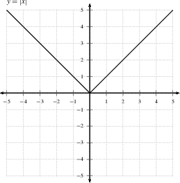
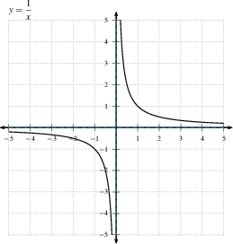
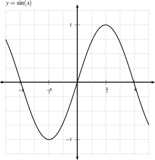
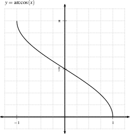
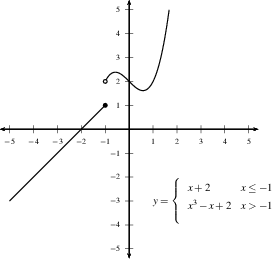
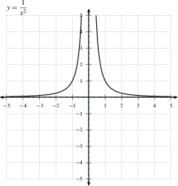
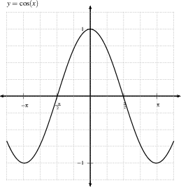
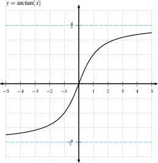

graph LR
A["Slowest: log(x)"] --> B["Polynomials: x^n (n>0)"];
B --> C["Exponentials: a^x (a>1)"];
C --> D["Factorials: x!"];
D --> E["Fastest: x^x"];
style A fill:#f9f,stroke:#333,stroke-width:2px;
style B fill:#bbf,stroke:#333,stroke-width:2px;
style C fill:#bfb,stroke:#333,stroke-width:2px;
style D fill:#fbb,stroke:#333,stroke-width:2px;
style E fill:#ff9,stroke:#333,stroke-width:2px;
Calculus I
Limits at Infinity and Asymptotes
Imron Rosyadi
Limits at Infinity
Understanding Limits at Infinity
So far we’ve looked at limits as \(x \to a^+\), \(x \to a^-\) and \(x \to a\). Now we explore what happens as \(x\) moves indefinitely, either positively or negatively.
As \(x \to \infty\)
This describes \(f(x)\)’s behavior as \(x\) grows without bound in the positive direction.
Think of \(x\) as 100, then 1,000, then 1,000,000, and so on.
If \(\displaystyle{\lim_{x \to \infty}} f(x)=L\), it means \(f(x)\) gets arbitrarily close to \(L\) as \(x\) becomes very large.
As \(x \to -\infty\)
This is similar, but in the negative direction.
Imagine \(x\) as -100, then -1,000, then -1,000,000.
If \(\displaystyle{\lim_{x \to -\infty}} f(x)=L\), then \(f(x)\) approaches \(L\) as \(x\) becomes very large negatively.
Tip
End Behavior. Limits at infinity help us understand the “end behavior” of a function’s graph, seeing where it settles as \(x\) goes far to the left or right.
Horizontal Asymptotes
When a function approaches a specific value as \(x \to \pm \infty\), that value defines a horizontal asymptote.
Definition: The line \(y=L\) is called a horizontal asymptote for \(y=f(x)\) if and only if \[ \lim_{x\to\infty}f(x)=L, \quad \text{ or }\quad \lim_{x\to-\infty}f(x)=L \]
Important
Can a function have more than one horizontal asymptote? Yes, a function can have at most two distinct horizontal asymptotes (one as \(x \to \infty\) and one as \(x \to -\infty\)).
The graph on the left has \(y=\pi/2\) and \(y=-\pi/2\) as horizontal asymptotes. 
The graph on the right has horizontal asymptotes \(y=\pm 4\). 
Limits of Rational Functions
A rational function is defined as \(f(x) = \dfrac{p(x)}{q(x)}\), where \(p(x)\) and \(q(x)\) are polynomials.
Evaluating limits of rational functions as \(x \to \pm \infty\) is a fundamental concept.
It reveals insights into the high school “rule” of comparing the degrees of the numerator and denominator to find horizontal asymptotes.
To evaluate \(\displaystyle \lim_{x\to\infty} \frac{P(x)}{Q(x)}\):
Divide both the numerator and the denominator by the highest power of \(x\) in the denominator.
Then simplify and apply the property \(\displaystyle \lim_{x\to\infty} \frac{1}{x^n} = 0\) for \(n > 0\).
Note
Even with the “rule,” understanding the process of evaluating these limits is crucial for deeper comprehension.
Limits of Rational Functions
Numerical Exploration
Let’s observe the behavior of a rational function as \(x\) becomes very large.
Functions Growth Rates
To compute limits like \(\displaystyle{\lim_{x \to \infty} \frac{f(x)}{g(x)}}\), we need to compare the growth rates of \(f(x)\) and \(g(x)\). This also involves identifying the fastest-growing part within each function.
Tip
Dominant Terms. When \(x\) approaches infinity, terms with higher powers or faster-growing functions (like exponentials) “dominate” the behavior. The other terms become negligible.
Hierarchy of Growth Rates
Understanding which functions grow faster is key to evaluating complex limits.
Example: Evaluating a Limit at Negative Infinity
Evaluate \(\displaystyle \lim_{x\to-\infty}\frac{x+3}{\sqrt{9x^2-5x}}\).
Solution Steps
- Identify Dominant Terms:
- As \(x\to-\infty\), the dominant term in the numerator is \(x\).
- In the denominator, \(x^2\) is the dominant term within the square root. So, \(\sqrt{9x^2-5x} \sim \sqrt{9x^2}\).
- Simplify the Denominator:
- \(\sqrt{9x^2} = 3\sqrt{x^2} = 3|x|\).
- Address Negative Infinity:
- Since \(x\to-\infty\), \(x\) is negative. Therefore, \(|x| = -x\).
- So, \(\sqrt{9x^2-5x} \sim 3(-x) = -3x\).
- Form the Simplified Ratio:
- The expression becomes approximately \(\frac{x}{-3x}\).
- Evaluate the Limit:
- \(\displaystyle \lim_{x\to-\infty}\frac{x}{-3x} = \lim_{x\to-\infty}\left(-\frac13\right) = -\frac13\).
Thus, the value of the limit is \(-\frac13\). This means \(y=-1/3\) is a horizontal asymptote.
Tip
Remember the absolute value! When dealing with \(\sqrt{x^2}\), it always simplifies to \(|x|\). The direction of infinity (positive or negative) dictates whether \(|x|\) is \(x\) or \(-x\). This is a common pitfall.
Vertical Asymptotes (Redux)
What happens if a function \(f(x)\) grows (or decreases) without bound as \(x\) approaches some finite value?
- If \(\displaystyle{\lim_{x \to a^+} f(x) = \infty}\), then \(f(x)\) is large and positive whenever \(x\) is slightly greater than \(a\).
- This indicates the graph \(y=f(x)\) gets very close to the vertical line \(x=a\). We call this a vertical asymptote.
- The same occurs if \(\displaystyle{\lim_{x \to a^+} f(x) = -\infty}\), or if \(\displaystyle{\lim_{x \to a^-} f(x) = \pm \infty}\). In all these cases, \(x=a\) is a vertical asymptote.
Warning
Key Distinction: Vertical asymptotes occur at finite \(x\)-values where the function itself goes to infinity. Horizontal asymptotes occur when \(x\) goes to infinity (or negative infinity), and the function approaches a finite value.
We have seen that \(f(x)=\frac{1}{x}\) has a vertical asymptote. Where is it?
Since \(\displaystyle{\lim_{x \to 0^+} \frac{1}{x} = \infty}\) and \(\displaystyle{\lim_{x \to 0^-} \frac{1}{x} = -\infty}\), there is a vertical asymptote at \(x=0\).
Summary of Asymptotes
A concise overview
- Limit as \(x \to \infty\) (or \(x \to -\infty\)) describes \(f(x)\)’s behavior as \(x\) increases (or decreases) without bound.
- The limit laws apply to limits as \(x \to \pm \infty\), just as they apply to limits as \(x \to a\) or \(x \to a^+\) or \(x \to a^-\).
- An asymptote is a line that the graph \(y=f(x)\) approaches. This line can be vertical, horizontal, or diagonal (oblique - not covered here). A curve can be an asymptote too.
- A horizontal asymptote \(y=L\) arises if \(\displaystyle{\lim_{x \to \infty} f(x) = L}\) or \(\displaystyle{\lim_{x \to -\infty} f(x) = L}\). A curve may cross its horizontal asymptote.
- A vertical asymptote \(x=a\) happens if \(\displaystyle{\lim_{x \to a^+} f(x) = \pm \infty}\) or \(\displaystyle{\lim_{x \to a^-} f(x) = \pm \infty}\). A curve cannot cross a vertical asymptote as it is undefined there.
Important
Always state asymptotes as equations of lines (e.g., \(y=3\), not just “3”).
Identify the Asymptotes!
DO: You should recognize all of the asymptotes of the following graphs (if they have any). You should know the functions for all but the 2nd and 3rd graphs without looking at the labels.







